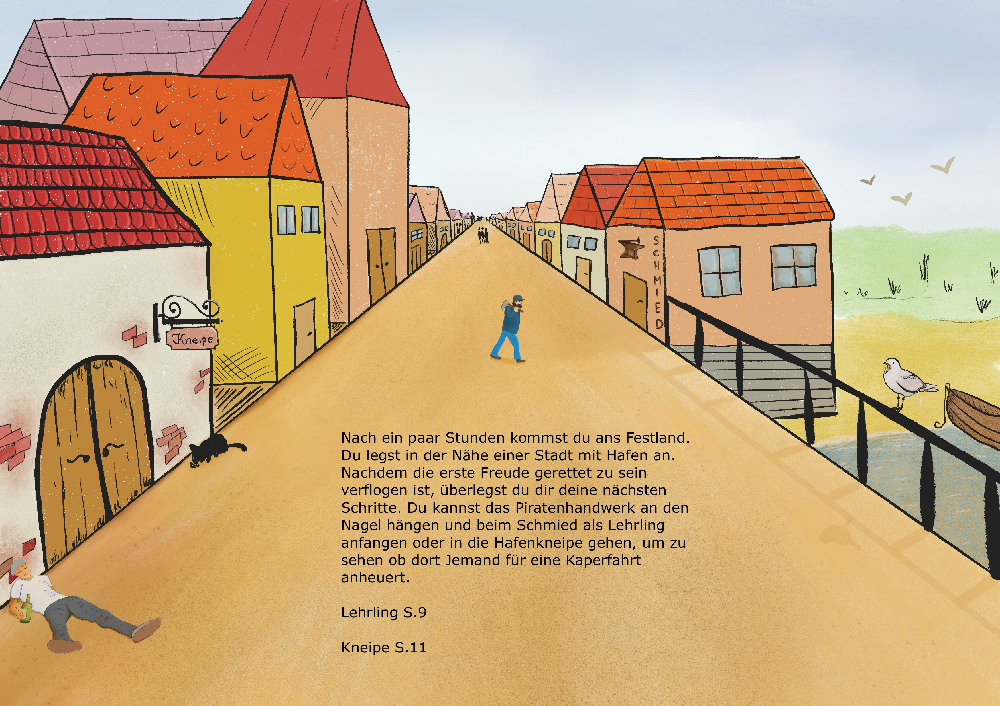

Nach ein paar Stunden kommst du ans Festland. Du landest in der Nähe einer Stadt mit Hafen an.
Nachdem die erste Freude gerettet zu sein verflogen ist überlegst du dir deine nächsten Schritte. Du kannst das Piratenhandwerk
an den Nagel hängen und beim Schmied als Lehrling anfangen oder in die Hafenkneipe gehen um zu sehen ob dort Jemand für eine
Kaperfahrt anheuert.
Lehrling (Seite 10)
Kneipe (Seite 12)